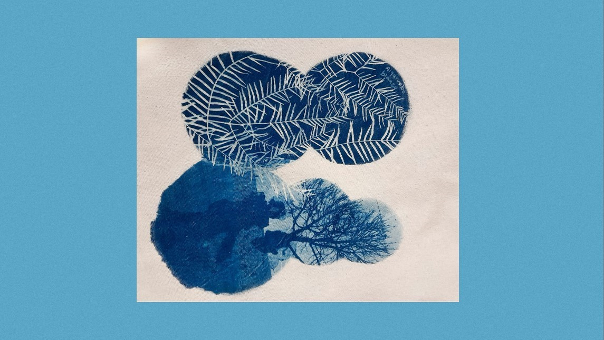

¿Te imaginas cómo sería revelar imágenes en las hojas de los árboles? Hoy en Bindi te contamos sobre una alternativa para hacer fotografías de manera sustentable utilizando la naturaleza.
La luz solar y las hojas verdes se combinan con una extraordinaria técnica en donde las imágenes quedan plasmadas. Esta técnica natural también es conocida como impresión clorofílica, ya que consiste en revelar imágenes a partir de la despigmentación de la hoja bajo la exposición al sol.
La mejor parte es que no utiliza ningún tipo de químico ni tinta, simplemente surgen los colores naturales de la hoja en el proceso de despigmentación, y es una sorpresa ver su resultado. Su carácter orgánico hace que cada trabajo sea completamente único. Así como no hay dos hojas iguales, las imágenes quedan impregnadas cada una de forma propia y auténtica, sin repetirse nunca.
En este proceso también el tiempo de revelado es indeterminado, entre uno y cuatro días, ya que depende de factores naturales como el clima, la estación del año y el tipo de hoja que utilicemos.
Quizás no lo sabías pero el revelado convencional utiliza químicos muy tóxicos para el medioambiente. Un solo litro de agua sobrante del revelado puede contaminar hasta mil litros de agua pura. Cuando tiramos ese agua va a parar a algún lado y contamina todo a su alrededor, incluyendo la naturaleza, los animales y a nosotrxs mismxs.
Esta alternativa del revelado solar apunta a hacer de la fotografía un arte más sostenible. Entre las técnicas caseras para revelar fotografías, sin químicos ni tinta, aparecen la cianotipia y la antotipia.
La primera consiste en una impresión artesanal de imágenes negativas sobre monocromo azul, mientras que la antotipia utiliza las propiedades de los pigmentos naturales de las plantas que cambian de color con la luz del sol. Ambas son muy sencillas y dan como resultado trabajos hermosos y muy originales. Acá abajo te dejamos tutoriales para que pruebes este arte vos mismx y descubras otro de los milagros de la naturaleza.
Tambien podes hacer talleres con: @huella.solar o @fillblue.cianotipo @cianotipiasofia